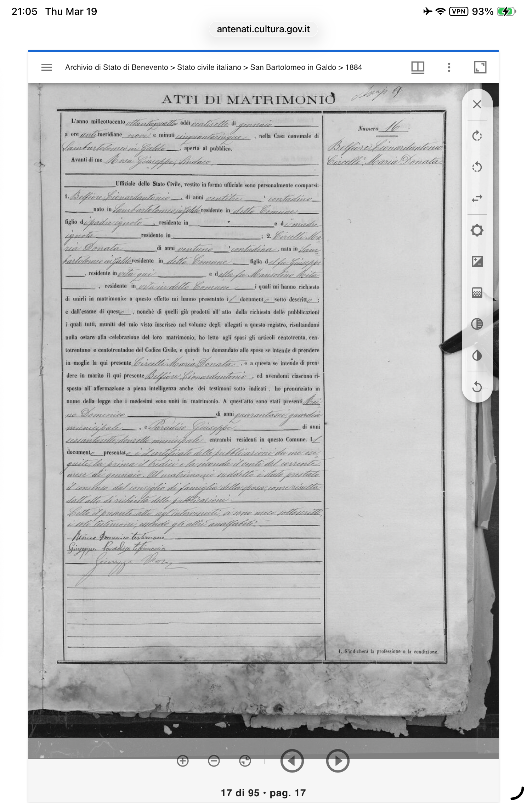
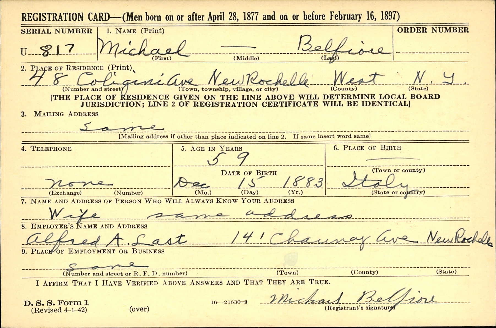

From San Bartolomeo in Galdo to America
It started with a death certificate and an obituary clipping. Uncle William had kept them — Michael Belfiore's death certificate from 1952, and Sammy Belfore's obituary from The Standard-Star in New Rochelle. Two documents that unlocked the entire Italian side of the family.
The death certificate named Michael's parents: Anthony Belfiore and Maria Circelli. The obituary named all nine of their children — four brothers and five sisters — and revealed that three of those brothers had become professional golfers, among the first native-born Americans to enter the sport. From there, the trail led to Ellis Island passenger records, census databases, Italian civil registries, and a small mountain town in Campania called San Bartolomeo in Galdo.
Then the Italian marriage record changed everything. The patriarch's real name was Leonardantonio Belfiore — not Anthony. And he was a foundling, a child of unknown parents. "Belfiore" — beautiful flower — was not an inherited surname at all. It was invented by a foundling home and given to an abandoned infant in the hills of Campania. The evidence strongly suggests Leonardantonio never made it to America — that Maria Doreta Circelli, a widow traveling under her maiden name, crossed the Atlantic alone on the SS Oregon on December 2, 1896, relying on her Circelli relatives for the journey.
Six generations later, Enzo Belfiore was born in Tampa, Florida in January 2026 — carrying US, UK, and German citizenship. The Belfiore name that began as a foundling's gift in the Apennine mountains of southern Italy continues on the Gulf Coast of Florida.

Ellis Island passenger record: "Circelli, Michele" — almost certainly Maria's brother or cousin, arriving from Naples in 1898.
Note: This research is ongoing. Confidence levels are noted throughout. The 1900 census for New Rochelle — the single most important record still unsearched — would resolve whether Leonardantonio ever came to America. Key documents including his death certificate (#42184) and Frances Towey's death certificate have been identified.
The Research
The research is broken into separate pages. The family tree maps every known member across six generations. The immigration story traces the journey from Italy to New Rochelle. The golfing brothers page tells one of the most remarkable stories in the family. And the research archive documents every source, record, and lead.
Key Discoveries
The Marriage Record — Leonardantonio Was a Foundling
A translated marriage record from the Comune di San Bartolomeo in Galdo confirms the marriage of Leonardantonio Belfiore to Maria Donata Circelli on January 27, 1884. The patriarch's real name was not "Anthony" — it was Leonardantonio, a compound given name later shortened by American clerks. Most remarkably, Leonardantonio was a foundling — the son of padre ignoto and madre ignota (both parents unknown). "Belfiore" was not an inherited surname. It was assigned by a foundling home — bel fiore, beautiful flower. The Belfiore line cannot be traced further back than Leonardantonio himself. Maria Donata's parents are identified as Giuseppe Circelli and Marianna Mita.

Atti di Matrimonio — the 1884 marriage record from San Bartolomeo in Galdo that revealed Leonardantonio was a foundling.
Maria Doreta Circelli — Found on the SS Oregon
The Ellis Island Foundation passenger database confirmed her record: "Circelli, Maria Doreta," arrived December 2, 1896, from Genoa and Naples. She traveled under her maiden name Circelli — not Belfiore. After 12 years of marriage, this strongly suggests she was traveling without her husband, likely as a widow relying on her Circelli relatives for the crossing. The evidence points to Leonardantonio having died in Italy before 1896.

Ellis Island passenger record: "Circelli, Maria Doreta" — SS Oregon, arrived December 2, 1896.

Customs List of Passengers for the SS Oregon — the ship that carried Maria Doreta Circelli to America.
San Bartolomeo in Galdo — The Ancestral Town
All 52 indexed Circelli records on Italy's Antenati civil records portal originate from a single town: San Bartolomeo in Galdo, Province of Benevento, Campania. The surname appears nowhere else in Italy's digitized records. Ellis Island manifests confirm it — every Circelli passenger lists variations of the town name. The nearby town of Circello (~15 km away), whose patron saint is San Michele, almost certainly gave the surname its origin. The family named their eldest son Michele.

SS Alsatia manifest (1898) — Michele and Salvatore Circelli traveling together from "S.Dartolomeo in Calor" (San Bartolomeo in Galdo).
The Complete Family Structure — Nine Children Confirmed
Sammy Belfore's obituary in The Standard-Star (New Rochelle) named every sibling: brothers Michael, Frank, and Joseph; sisters Rose, Caroline, Mollie (Mrs. Anthony Drew), Phyl (Mrs. Angelo Paternostro), and Mary (Mrs. Joseph D'Onofrio). It confirmed Sammy was born Christmas Day 1899, that he changed the spelling to "Belfore," and that three of the four brothers were professional golfers — with Michael described as "their non-golfing brother."

"Sammy Belfore, Last Of 3 Golfing Brothers" — The Standard-Star obituary that revealed the complete family structure.
The Golfing Brothers — First Native-Born American Pros
Three sons of Italian immigrants — Sammy, Frank, and Joseph Belfiore — became professional golfers at a time when the sport was almost exclusively dominated by foreign-born (usually Scottish) professionals. Sammy was assistant pro at Wykagyl Country Club in New Rochelle, then head pro at Seabreeze in Daytona Beach. Joseph was pro at Grosse Pointe, Michigan. Frank ran the golf shop. Their story was described as remarkable in Sammy's obituary.

The three golfing Belfiore brothers on a golf course, circa 1940s. Believed to be Sammy, Frank, and Joseph.
Frances Towey — Michael's Second Wife
Michael Belfiore was married twice. His first wife (name unknown) gave him a daughter, Dorothy. After his first wife's death, he married Frances Towey — an Irish-American woman whose surname traces to County Mayo and County Roscommon in western Ireland. With Frances he had two sons: Edward ("Eddie") and Joseph (Seb's grandfather). This Irish-Italian Catholic union was notably counter-cultural for its era — Irish-Italian marriages were rare before World War II.

Michael Belfiore's WWII Draft Registration Card, 1942 — by this time married to Frances Towey.
Enzo Belfiore — The Sixth Generation
Enzo Belfiore, born January 2026 in Tampa, Florida, is the sixth generation from the immigrants. He holds triple citizenship: US, UK, and German. Named in the Italian tradition, he carries a name that began in the Apennine mountains of southern Italy over 130 years ago. His great-great-great-grandparents Anthony and Maria could never have imagined the journey their surname would take.
The Direct Line
Six generations, from a mountain town in Campania to Davis Island in Tampa.
Leonardantonio Belfiore & Maria Donata Circelli
Married January 27, 1884, in San Bartolomeo in Galdo, Benevento, Italy. Leonardantonio was a foundling — "Belfiore" was assigned by a foundling home, not inherited. Maria's parents were Giuseppe Circelli and Marianna Mita. The evidence strongly suggests Leonardantonio died in Italy before 1896. Maria arrived alone on the SS Oregon on December 2, 1896, traveling under her maiden name. Nine children were eventually born. An "Anthony Belfiore" died July 11, 1938, in New Rochelle — whether this was Leonardantonio or another family member remains unresolved.

Circelli birth record from San Bartolomeo in Galdo — Antonio Maria Circelli, 1862. A different branch of Maria Donata's Circelli family.
Michael Kirtus Belfiore
Born December 15, 1883 or 1885, Italy. Arrived as a child. House painter in New Rochelle. Married twice — first wife unknown, who gave him a daughter Dorothy. Then married Frances Towey (Irish-American, b. 1897), with whom he had two sons: Edward and Joseph. Died January 16, 1952 at New Rochelle Hospital. The only brother who didn't become a golfer.

Michael Kirtus Belfiore's WWI Draft Registration Card, September 12, 1918.

1940 U.S. Census — Michael Belfiore (head, painter), with Frances, Edward, and Joseph.
Joseph Belfiore & Dorothy Belfiore
Joseph was Michael's son with Frances Towey, named after his uncle Joseph (the golfer) following Italian tradition. He married Dorothy Belfiore (née unknown), an Irish-American woman. SSN issued in Maryland. Died in West Babylon, NY.
Robert Belfiore
Son of Joseph and Dorothy. Raised in the New Rochelle area. Father of Seb and Alexander. His brother William provided the death certificate and obituary that started this entire research.
Seb Belfiore
Born 1989 in the United Kingdom. Dual US/UK citizenship. Product designer. Lives on Davis Island, Tampa, FL. Married to Valeria (German). Five generations from the immigrants.
Enzo Belfiore
Born January 2026, Tampa, FL. Triple citizenship: US, UK, German. Six generations from Anthony and Maria. Named in the Italian tradition.